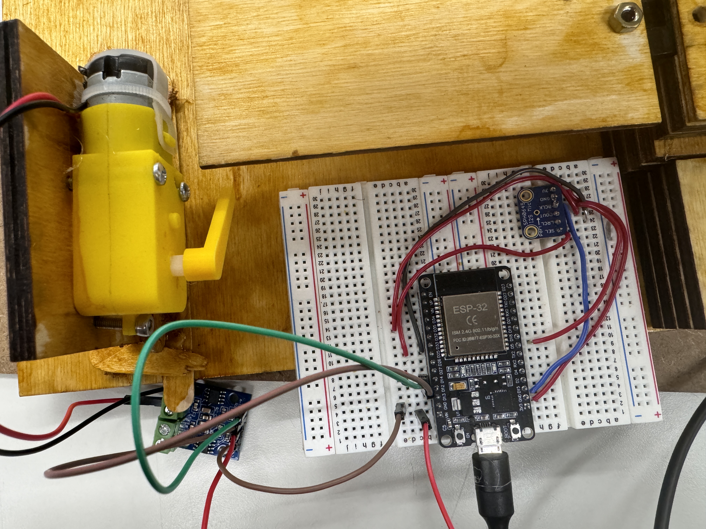

<div class="textcontainer">
<p class="margin"> </p>
<h3>Week 4: Microcontroller Programming</h3>
<p>For this assignment, I used a microphone sensor to detect level sound in a room and then rotate the motor. This is what I ended up using for my final project as it used a microphone sensor.</p>
<p>The circuit looks as follows </p>
<p></p>
The code looks as follow
<pre><code>
#include <ESP_I2S.h>
I2SClass I2S;
void setup() {
// Open serial communications and wait for port to open:
// A baud rate of 115200 is used instead of 9600 for a faster data rate
// on non-native USB ports
Serial.begin(115200);
while (!Serial) {
; // wait for serial port to connect. Needed for native USB port only
}
I2S.setPins(5, 25, -1, 35, 0);// SCK (BCK), WS (LRCL), SDOUT, SDIN, MCLK
// start I2S at 16 kHz with 32-bits per sample
if (!I2S.begin(I2S_MODE_STD, 16000, I2S_DATA_BIT_WIDTH_32BIT, I2S_SLOT_MODE_MONO)) {
Serial.println("Failed to initialize I2S!");
while (1); // do nothing
}
}
void loop() {
while (I2S.available())
{
// read a sample
int sample = I2S.read();
if ((sample == 0) || (sample == -1) ) {
return;
}
// convert to 18 bit signed
sample >>= 14;
int amplitude = abs(sample);
const int A1A = 3;
const int A1B = 4;
pinMode(A1A, OUTPUT);
pinMode(A1B, OUTPUT);
digitalWrite(A1A, LOW);
digitalWrite(A1B, LOW);
Serial.print(100000);
Serial.print(" ");
Serial.print(-100000);
Serial.print(" ");
// if it's non-zero print value to serial
Serial.println(abs(sample));
//Serial.println(abs(sample));
//Serial.println(amplitude);
}
}
</code></pre>
</div>